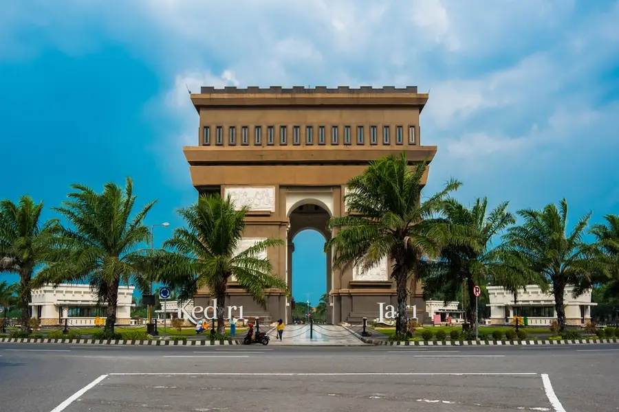

Tentang Kediri
Kediri adalah kota yang terletak di provinsi Jawa Timur, Indonesia. Kota ini dikenal dengan budayanya yang kaya dan keindahan alamnya. Kota Kediri adalah salah satu kota di Provinsi Jawa Timur, Indonesia, yang memiliki nilai sejarah dan perkembangan ekonomi yang penting. Kota ini dikenal sejak masa Kerajaan Kediri pada abad ke-12, yang dipimpin oleh Sri Jayabaya. Secara geografis, Kediri dilalui oleh Sungai Brantas yang membuat wilayahnya subur dan mendukung kegiatan pertanian.
Saat ini, Kediri berkembang sebagai kota industri dan perdagangan, dengan kehadiran perusahaan besar seperti Gudang Garam yang menjadi penggerak ekonomi utama. Selain itu, kota ini juga memiliki ikon wisata terkenal yaitu Simpang Lima Gumul serta berbagai potensi wisata alam di sekitarnya. Dengan perpaduan antara sejarah, budaya, dan modernisasi, Kediri menjadi salah satu kota yang menarik di Jawa Timur.